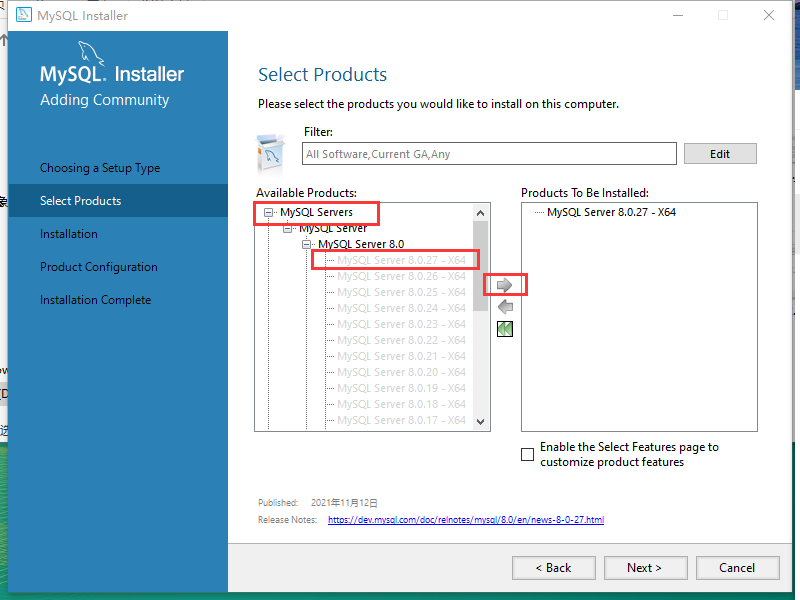

MySQL 的安装和配置
在使用数据库之前，需要先安装数据库管理软件。MySQL数据库管理软件支持多个平台的安装，我们的课程中以Windows系统下的MySQL安装设置为例，如果想要了解(类)Unix和(类)Linux平台下，MySQL的安装方式，请自行上网查询。
MySQL介绍
MySQL是一种开放源代码的关系型数据库管理系统，开发者为瑞典MySQL AB公司。在2008年1月16号被Sun公司收购。而2009年,SUN又被Oracle收购。目前 MySQL被广泛地应用在Internet上的中小型网站中。由于其体积小、速度快、总体拥有成本低，尤其是开放源码这一特点，使得很多互联网公司选择了MySQL作为网站数据库。
MySQL主要分为两大版本:
- 企业版(Enterprise Edition):功能齐全，但是收费，而且费用不便宜……
- 社区版(Community Edition):功能相对比较简单，开源免费。
我们学习过程中使用MySQL社区版，目前社区版最新的版本号是8.0.27(截止至2021年12月)。
注意：MySQL8其实是MySQL5.8的别名，由于在MySQL5.8中，增加和修改了很多功能，版本号直接修改为了8.0. 所以，MySQL5.7和8.0只相差了一个大版本，而不是3个。
下载
MySQL官方下载地址: https://dev.mysql.com/downloads/windows/installer/ 选择自己想要安装的MySQL版本，推荐下载 8.0.27 版本的安装器。
注意：下载选项里只有32位的安装器，如果是64位的系统也不会影响。我们在这儿下载的只是安装器，在运行安装器的时候，会根据系统的版本自动选择安装32位还是64位的MySQL.
安装
双击运行 mysql-installer-community-8.0.27.1.msi 文件。 .msi 和 .exe 一样，都是Windows里的可执行文件。
选择
Custom，点击Next，选择要安装的MySQL程序。在这一步中，虽然选择了只安装 MySQL Server，但是同时也会自动安装 MySQL的客户端。
不断的点击
Next或者Execute按钮，执行下一步操作，直到输入密码页面。注意:要牢记密码，登录MySQL服务器时需要使用!点击
Next或者Execute直到MySQL安装完成并启动。
启动服务器
右键我的电脑-->管理--> 服务和应用程序-->服务，找到MySQL80这个服务，查看服务的状态。通常情况下，MySQL安装完成以后会自动启动MySQL服务器，如果此时服务器状态不是正在运行，可以右键这个服务，选择启动，将MySQL服务器开启。
卸载
停止MySQL服务：右键
我的电脑-->管理-->服务和应用程序-->服务，找到MySQL80这个服务，然后右键选择停止。在控制面板中找到MySQL8.0相关软件，右键进行卸载。
- 找到MySQL的相关文件夹，默认会有
C:\Program Files\MySQL和C:\ProgramData\MySQL，删除这两个文件夹。 - 上面三步完成以后，MySQL就已经从本机上卸载了。但是此时如果 右键
我的电脑-->管理-->服务和应用程序-->服务，依然能够看到MySQL80这个服务存在。此时需要在DOS界面使用sc delete MySQL80即可将服务删除。 - 删除环境变量里的MySQL配置。